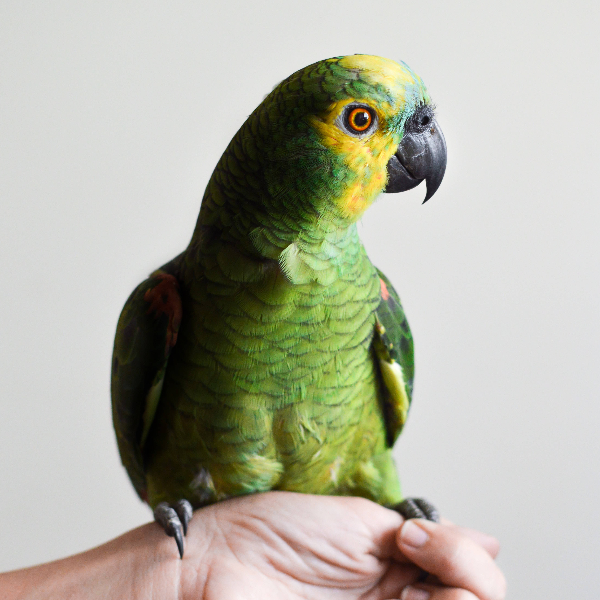

Frequently Asked Questions
- Can I put Sprite in my fish's aquarium?
- The answer is yes, you should! The carbonation exfoliates their gills and gives them energy. It also is most fishs favorite beverage.
- Can I trade in a currently owned pet for store credit?
- Yes! If you save up enough you could trade your credit for an orangutan.
- Is it excessive to own a dozen pets?
- Absolutely not! In fact, owning more than seven pets has been proven to make you feel warm and fuzzy on the inside.
- Can I return unwanted pets and/ or supplies I ordered online?
- Of course you can! Customer satisfaction is our #1 goal. Just make sure you poke enough holes in your pets box before you ship.